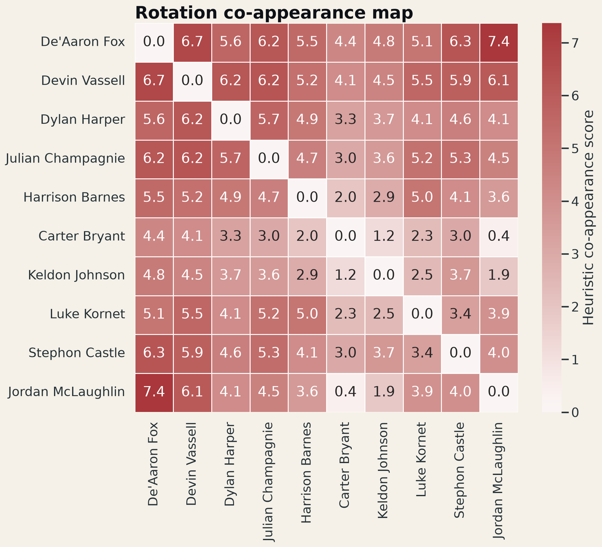

Which player pairs and starting groups repeatedly coincide with positive game-level signals, and where is the sample large enough to justify deeper film or lineup analysis?
The strongest high-sample box-score pair proxy is De’Aaron Fox + Jordan McLaughlin across 43 co-appearances. The most-used starting group logged 44 games with a 0.727 win rate and a +10.9 average game margin.
This section demonstrates an important analytical boundary: co-appearance and box plus/minus are not shared-possession lineup data. The project therefore exposes reliability and calls the result a proxy, making it a candidate generator for deeper play-by-play work rather than a causal conclusion.

This project does not claim that two players shared every recorded minute or caused the team result. It is a screening layer designed to identify questions for possession-level lineup data.